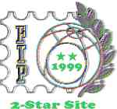

Philatelic Awards won by this site between 1998 and 2001
| Stamp Collecting's Classic Sites | |
|
These (25) sites are "Stamp Collecting's Classic Sites" and cover their topics like no others. Each site is a blend of quality content, demonstrating outstanding knowledge of the topic, and quality design based on the site's usability, dependability and creativity. |
 |
| The Best of the Net 2001 | |
| The Stamp Collecting Guidesite at About.com is proud to award the About.com "Best of the Net" award to the nine Websites listed below. These sites are the "Best of the Net" and cover their topic like no other. Each site is a blend of quality content, demonstrating outstanding knowledge of the topic, and quality design based on the site's usability, dependability and creativity. | |
| FIP Site Evaluation 2000 | |
|
There were 49 entries received for the evaluation of their sites. These came from 19 countries, of which, 8 countries entered for the first time. The evaluation was completed by a team of seven accredited literature jurors from six countries in Europe and North America under the leadership of Francis Kiddle, Vice-President of the FIP Literature Commission. "May I congratulate you on your award, and thank you for entering." Francis Kiddle. |
. |

| Super Stamp Award Site | |
| Congratulations! Your stamp web page at http://www.values.ch/ has been awarded the Super Stamp Site Award recognizing excellence in web pages devoted to philately. On behalf of stamp collectors let me thank you for the effort you put into your page. Regards, Peter G. Aitken. | |
|
|
| FIP Site Evaluation 1999 | |
| China 1999
Philatelic Exhibition, Beijing.
Thank you for your participation in the
FIP 1999 evaluation program; I hope that the results live up to your expectations. |
.  |
|
|
| MIDAPHIL National Stamp Show | |
|
. |
We are pleased to announce the honors awarded to the website entries in our 1999 competition produced in conjunction with the MIDAPHIL National Stamp Show held on October 22-24. Scott Couch, Chairman |
|
|
| Revised: 12/04/08. Copyright © 1998 - 2001 by Victor Manta, Switzerland. All rights reserved in all countries. |
|
||